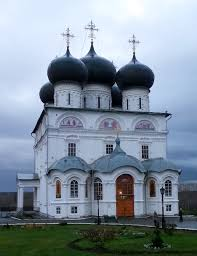

 Св. Трифон Вятский сперва выстроил на территории нынешнего монастыря деревянную церковь Благовещения, а спустя порядка 20 лет — другую, Успенскую, тоже деревянную, но гораздо более величественную. Вокруг монастыря, который первые 100 лет оставался полностью деревянным, разрасталась слобода, и впоследствии все постройки понемногу были перестроены в каменные. Трифонов монастырь в Кирове — самый старый на всей Вятской земле, и он имеет огромное духовное значение для православных верующих. Именно отсюда отправляется Великорецкий крестный ход.
Св. Трифон Вятский сперва выстроил на территории нынешнего монастыря деревянную церковь Благовещения, а спустя порядка 20 лет — другую, Успенскую, тоже деревянную, но гораздо более величественную. Вокруг монастыря, который первые 100 лет оставался полностью деревянным, разрасталась слобода, и впоследствии все постройки понемногу были перестроены в каменные. Трифонов монастырь в Кирове — самый старый на всей Вятской земле, и он имеет огромное духовное значение для православных верующих. Именно отсюда отправляется Великорецкий крестный ход.В последующие века монастырь царскими указами получил немало земель с крестьянскими сёлами и стал в конце концов весьма обеспеченным и процветающим. Но в 1918 г. монастырь закрыли, а монахов расстреляли. Успенский собор, однако, продолжал действовать после этого ещё 10 лет. В 1988 г. вопрос о передаче монастыря Краеведческому музею либо епархии был решён благодаря массовому сбору подписей, и в 1991 г. монастырь был открыт, а Успенский собор был вновь освящён.
 Успенский собор Трифонова монастыря представляет собой почти эталонную церковную постройку 17 века. Это крупный храм с шестью куполами, немного напоминающий Успенский собор в Московском Кремле. Здание строго симметрично и достаточно сдержанно в экстерьере, как и диктовали каноны русского православного зодчества. Высокие и мощные барабаны венчают чёрные купола-луковки, под кровлей можно увидеть ленту закомар, образующую полукруглые своды. При строительстве собора, как и полагалось в то время, учитывалось то, какой вид он будет иметь издали, в перспективе. Поэтому он прекрасно выглядел и с Кикиморской горы, и со старой рыночной площади, и с левого берега оврага. К сожалению, сегодня эти перспективы нарушены.
Успенский собор Трифонова монастыря представляет собой почти эталонную церковную постройку 17 века. Это крупный храм с шестью куполами, немного напоминающий Успенский собор в Московском Кремле. Здание строго симметрично и достаточно сдержанно в экстерьере, как и диктовали каноны русского православного зодчества. Высокие и мощные барабаны венчают чёрные купола-луковки, под кровлей можно увидеть ленту закомар, образующую полукруглые своды. При строительстве собора, как и полагалось в то время, учитывалось то, какой вид он будет иметь издали, в перспективе. Поэтому он прекрасно выглядел и с Кикиморской горы, и со старой рыночной площади, и с левого берега оврага. К сожалению, сегодня эти перспективы нарушены.Всего в состав монастырского комплекса входят немногим меньше 20 построек. Самые значимые из них — это четыре церкви: Успенская, Благовещенская, Трёхсвятительская и Никольская надвратная. Самой ранней из них в их нынешнем виде стал собор Успения Богородицы, выстроенный в конце 17 века. Почти сразу за ним появилась церковь над воротами, а две другие были перестроены в камне в первой половине 18 века.
Другие примечательные монастырские постройки — это колокольня, первоначально выстроенная в 18 веке, затем разрушенная и вновь восстановленная только в 1990-х гг.; четыре угловые башни 18 века (две из них также восстановлены в конце 20 века) и часовня преподобного Трифона.